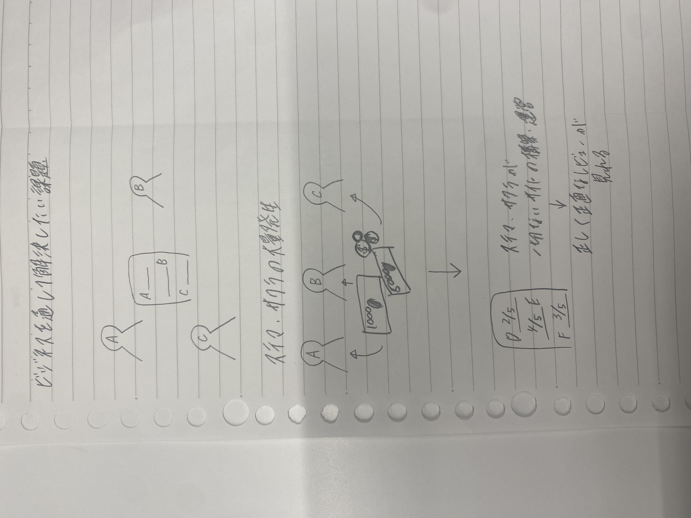

夏季休暇中課題
ビジネスを通して解決したい課題

ステマやサクラがないサイトを構築・運営
課題：ステマやサクラが大量発生し結局何がいいのか分からない ex:美容垢
解決策：ステマやサクラ一切なし！正しく正直なレビューだけを扱ったサイトを構築・運営
メリット：ステマやサクラがない商品→過剰評価がなくなり正直な評価だけがつく→
１企業側もいい評価を貰えるように商品を改善するように努める
２消費者も騙されることなく自分に合ったものを選び購入できる